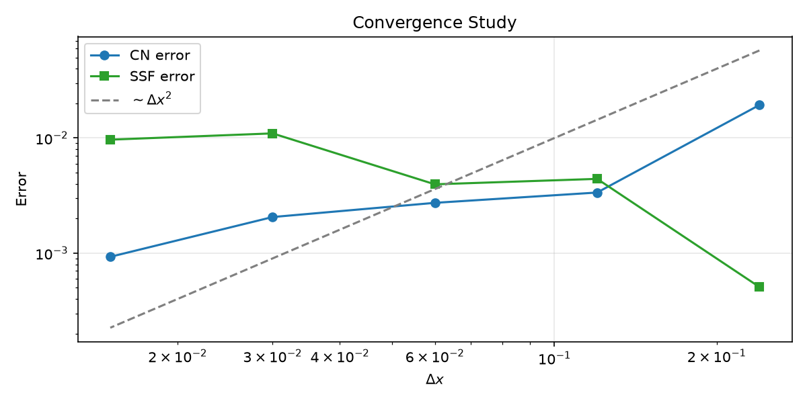
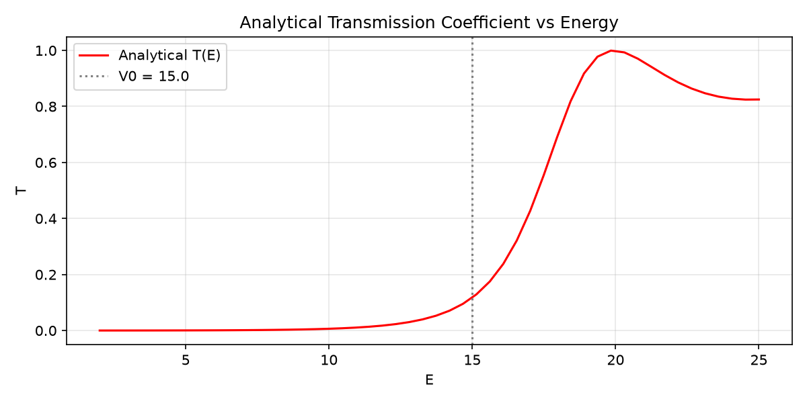
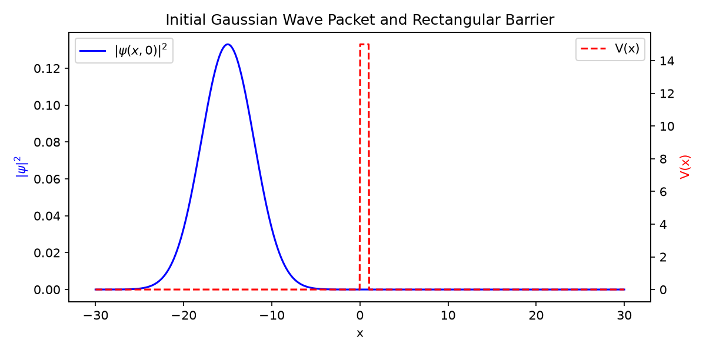

Quantum Tunneling
Numerical Study of the 1D Schrödinger Equation
scroll ↓
We present a comparative numerical study of two methods for solving the one-dimensional time-dependent Schrödinger equation: the Crank-Nicolson (CN) finite-difference scheme and the Split-Step Fourier (SSF) spectral method. Both are validated against analytical results for quantum tunneling through a rectangular potential barrier.
Key finding: CN achieves higher accuracy for discontinuous potentials, while SSF is 2–4× faster but suffers from Gibbs oscillations at potential edges.
In dimensionless units (\(\hbar = 1\), \(m = 1\)):
Implicit finite-difference, second-order accurate in space and time.
Operator splitting with FFT (Strang splitting).
| N | CN time (s) | SSF time (s) | CN error | SSF error |
|---|---|---|---|---|
| 256 | 0.116 | 0.032 | 0.018 | 0.002 |
| 512 | 0.197 | 0.050 | 0.011 | 0.005 |
| 1024 | 0.175 | 0.082 | 0.0003 | 0.005 |
| 2048 | 0.571 | 0.174 | 0.001 | 0.011 |
| 4096 | 0.814 | 0.330 | 0.002 | 0.010 |



Both methods conserve total probability with error < 1e-13 over 400 time steps.
Using a wide Gaussian packet (σ = 3.0):
| Method | T numerical | T analytical | Error |
|---|---|---|---|
| Crank-Nicolson | 0.0286 | 0.0253 | 0.0033 |
| Split-Step Fourier | 0.0424 | 0.0253 | 0.0171 |
1. J. Crank, P. Nicolson (1947). Proc. Camb. Phil. Soc., 43(1), 50-67. 2. R. H. Hardin, F. D. Tappert (1973). SIAM Review, 15(2), 423. 3. D. J. Griffiths. Introduction to Quantum Mechanics. Pearson.